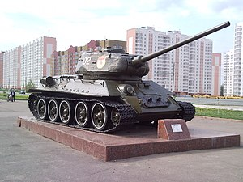

A medium tank is a classification of tanks, particularly prevalent during World War II which represented a compromise between the mobility oriented light tanks and the armour and armament oriented heavy tanks. A medium tank's classification is not actually based on weight, but off of tactical usage and intended purpose.The most widely produced, cost effective and successful tanks of World War II (the German Panzer IV, the Soviet T-34, and the American M4 Sherman) were all medium tank designs. Many of the medium tank lines became what are called main battle tanks in most countries.
The first tanks to carry the name "Medium" appeared in the First World War with the British Medium Mark A Whippet. It was smaller, lighter and faster than the British heavy tanks of the time and only carried machine guns. The medium tank doctrine came into use in the interwar period. Its existence outlasted the super-heavy tank and the heavy tank and gradually transitioned into the main battle tank.Medium tanks of the interwar period included the British Vickers Medium Mark II and the Soviet multi-turreted T-28. In the period leading up to World War II, the British stopped using the term Medium for their tanks as the new philosophy of 'Cruiser tank' and 'Infantry tank' which defined tanks by role rather than size came into use.
T-34 Medium Tank.
The role of medium tanks started with a prioritisation of speed. Medium tanks could travel faster, but needed help to cross trenches, where heavy tanks were large enough to cross unaided. In British use, this evolved into the Cruiser tank class, while other tank doctrines formed around the medium tank making the main advance. In this later use, medium tanks represent the designer's intent of producing a successful balance of firepower, mobility, and protection. Medium tanks aim to be suitable to the widest variety of roles, with less reliance on other types of tank during normal operations.
read more...